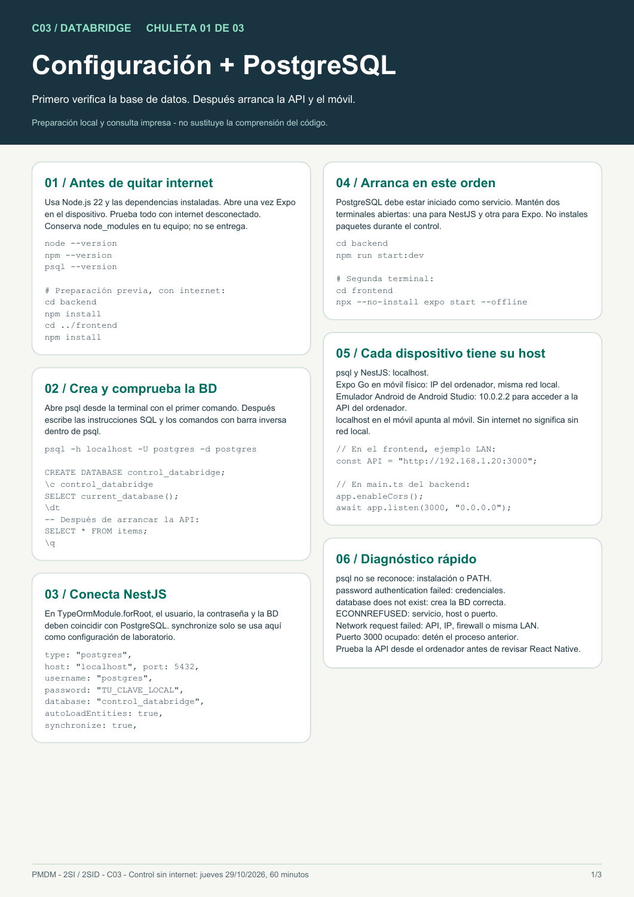
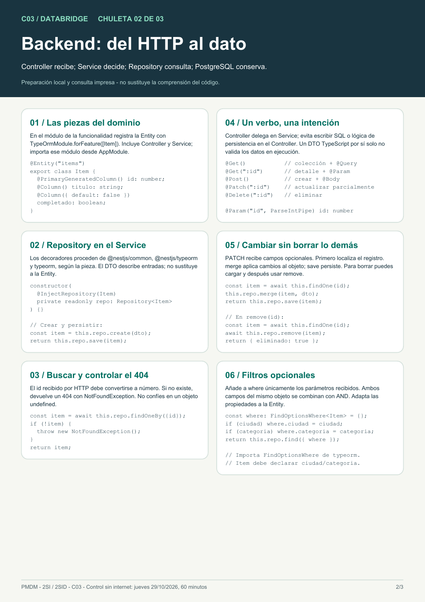
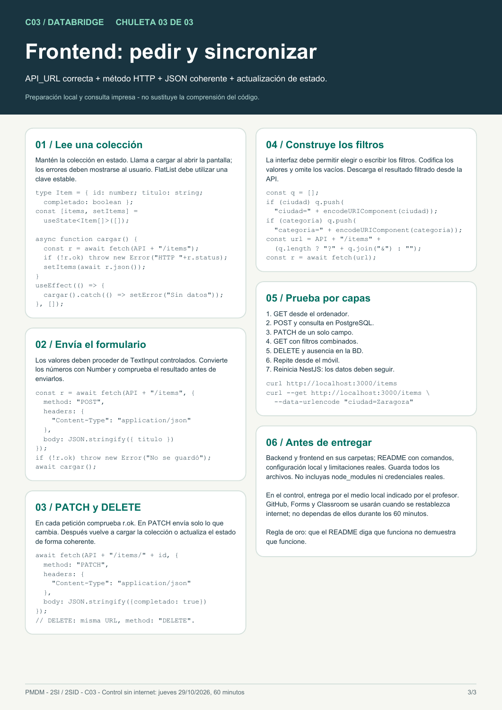

01 / CONFIGURACIÓN
PostgreSQL y entorno local
Orden de arranque, creación de la BD, TypeORM, direcciones IP y diagnóstico de errores.
Descargar infografía 01

Tres chuletas para preparar tu entorno, construir el backend y conectar el frontend. Descárgalas o imprímelas antes del control.
Jueves 29 de octubre de 2026 · Test 15 min + challenge 75 min · Individual
Podrás consultar estas tres chuletas impresas o descargadas. No se permiten IA ni búsquedas web durante el control. La red local para comunicar el móvil y el ordenador sí se permite.
Prepara PostgreSQL, Node.js 22, las dependencias y Expo Go o el emulador antes del jueves. La base neutral está en GitHub, sin solución del dominio. Obtén el repositorio con Git e instala sus dependencias previamente.
Orden de arranque, creación de la BD, TypeORM, direcciones IP y diagnóstico de errores.
Descargar infografía 01
Entity, DTO, módulo, Controller, Service y Repository. CRUD, 404, actualización parcial y filtros.
Descargar infografía 02
fetch, JSON, formularios, filtros, errores HTTP y actualización de la lista tras cada operación.
Descargar infografía 03
npm ci dentro de backend/ y de frontend/. Conserva node_modules en tu ordenador.control_databridge en PostgreSQL y sigue la guía paso a paso de .env: creación del archivo, explicación de variables, ejemplo para macOS y comprobación de Git.http://localhost:3000/salud. Abre la pantalla base de Expo.npx --no-install expo start --offline. Si utilizas un móvil, conserva la misma red local y prueba la IP del ordenador.El cuaderno completo se entrega el lunes 26 de octubre a las 11:00 por su formulario y por Classroom. Su rúbrica evalúa los diez ejercicios. El control del jueves es una actividad individual independiente: 15 minutos de test y 75 de challenge, con su propio enunciado y puntuación. Abre el cuaderno web de consolidación.
Referencias técnicas: Expo CLINestJS y TypeORMPostgreSQL / psql